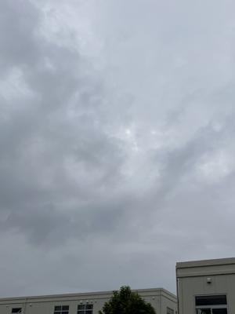
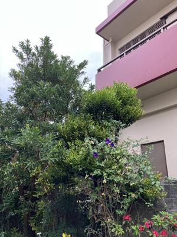
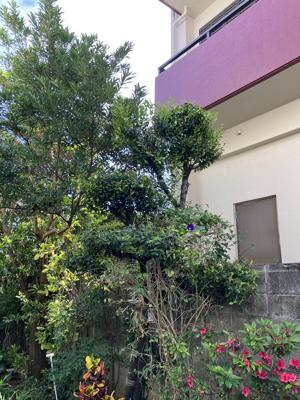
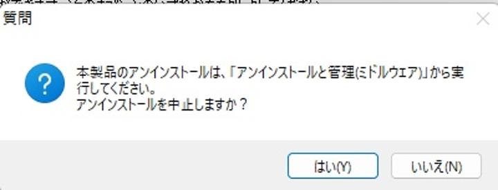

うるがいの話 ある日
最新: 黒木の剪定【うるがいの話 ある日】とは 一日だけのプログです
『うるがいの話』の最新一日だけのプログで、通信料が少なく経済的だ。カニの画像をクリックすると全ての日付が載る『うるがいの話』サイトを表示します
|
|
【うるがいの話】 うるがい(ｳﾙｶﾞｲ urugai)とは、『もずくがに』の名前でとても大きくなります。 |
|---|---|
|
|
【カミマヤーの話】 猫のことを方言でマヤーといいます。カミマヤー（kamimayaa）とは、神の猫のことです。 |
|
【たながぁの音楽】 たながぁ（ﾀﾅｶﾞｰ tanagaa）とは手長えびのことで、何種類かあり大きいのは車 エビぐらいになります。 |

|
【ぶながぁの話】 ぶながぁ(ﾌﾞﾅｶﾞｰ bunagaa)とは、赤い髪の毛、赤い身体、そして身長は１ｍ２０ｃｍ ぐらい、川の蟹を食べているの目撃された。場所は沖縄県国頭郡大宜味村のと ある村僕の隣近所に住んでいる爺さんから、聞いた話です。 |
|
|
【ギーマの話】 ギーマ(giima)とは、山原の里山に咲くスズランに似た、 花を付けます。実は食べられます、 気が付くと口の周りが紫になっています。 |
2026年03月28日 (土）黒木の剪定
17:16

毎年剪定してますよね、業者に頼んでいるのですか、『７万円で
す』との回答。昨日、駐車場の黒木を久しぶりに剪定したら、お
隣の奥さんが、大変だねと声をかけてきた。剪定しながら、近況
を話す、そしてそう言えば、ピアノしてますよね、私もユーチュ
ーブ動画を作ってますよ、『アナと雪の女王 三線』と検索すれ
ば、動画を見れると思いますと話す。夜、チャンネル登録数が一
つ増えて、９６になっていた。多分、お隣さんだと思う。
左が剪定前、右が剪定後


windows11です
コントロールパネルのプログラムと機能で
NetCOBOL standard Edtion 開発パッケージV12a
を、アンインストールしたら
本製品のアンインストールは、「アンインストールと管理（ミド
ルウェア）から実行してください。
とメッセージがでました。
アンインストールと管理（ミドルウェア）
を探しましたが
分かりません
教えてください

エアイにヒントを教えてもらい、２年前にインストールしたソフ
トを無事アンインストールした。もう、使うことは一生ないっす